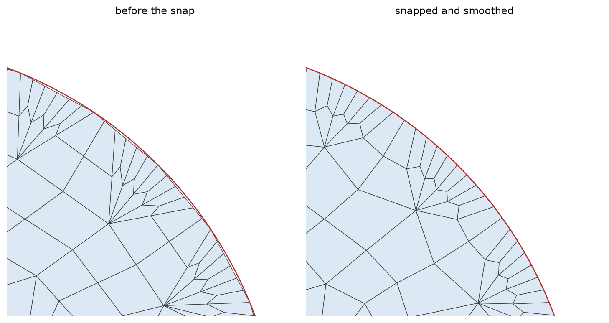

- boundaryThe name of the boundary whose nodes are snapped onto the curve.
C++ Type:BoundaryName
Controllable:No
Description:The name of the boundary whose nodes are snapped onto the curve.
- inputThe input mesh whose boundary nodes are snapped onto the curve.
C++ Type:MeshGeneratorName
Controllable:No
Description:The input mesh whose boundary nodes are snapped onto the curve.
- parsed_curve_generatorThe ParsedCurveGenerator that defines the curve to snap the nodes onto.
C++ Type:MeshGeneratorName
Controllable:No
Description:The ParsedCurveGenerator that defines the curve to snap the nodes onto.
MoveBoundaryNodesToCurveGenerator
Snaps the nodes of a boundary onto the parametric curve of a ParsedCurveGenerator to recover the geometry that the straight element edges of the input mesh approximate.
Overview
A boundary (of a 2D mesh) meshed from a curve is a chain of straight element edges, so it encloses the chord polygon of the curve rather than the curve itself. Every node of that chain does lie on the curve, but any node added to the boundary afterwards lies on a chord, and the gap between the chord and the curve is a part of the geometry that the mesh is not capturing.
MoveBoundaryNodesToCurveGenerator closes that gap. It takes the boundary named in "boundary" and moves each of its nodes to the closest point of the curve defined by the ParsedCurveGenerator named in "parsed_curve_generator". The curve is not re-entered here: "section_bounding_t_values" and "is_closed_loop" are read from that generator, and the curve itself is evaluated by it, so the nodes are snapped onto the same curve they were meshed from, and there is no second definition to keep in step.
The boundary may be given as a sideset, as a nodeset, or as both; the nodes of its sides and of its nodeset entries are all collected. Since the curve is defined in the XY-plane, only the in-plane coordinates of a node are changed. The input mesh must be replicated.

Figure 1: A quadrant of the circle boundary of the example below, with the curve drawn in red. Before the snap, the boundary nodes the conversion added lie on the chords, inside the curve; the snap moves every boundary node onto the curve and the smoothing relaxes the elements behind it.
Finding the Closest Point
The closest point is found in the curve parameter , not in space. Each section of the curve delimited by "section_bounding_t_values" is first sampled uniformly at "samples_per_section" values of , and the sample nearest the node brackets the minimum between its two neighbors. A golden-section search then refines within that bracket.
The sampling is what makes the bracket correct, so "samples_per_section" has to resolve the features of the curve: a curve that turns sharply, or approaches itself, within one sampling interval can bracket the wrong minimum, and the refinement will then converge to a point that is close by but not closest. Raising the parameter costs only setup time.
On a closed loop the parameter is periodic, and the search is too. The sample before the first and the sample after the last are taken across the seam, one period below and above the sampled range, so a node near the start of the curve is not held back by the end of the parameter interval.
Usage
One instance snaps one boundary onto one curve. A domain bounded by several curves needs one instance per pair, chained through "input".
Place the snap after the quadrilateral conversion, so that it also catches the nodes that conversion introduced, and follow it with a SmoothMeshGenerator to let the interior absorb the boundary movement. The Laplace algorithm holds boundary nodes fixed, so the recovered geometry is kept while the elements just inside it are relaxed.
CircularBoundaryCorrectionGenerator addresses a related but distinct problem. It corrects the radius of a circular polygonal boundary so that the polygon encloses the area of the circle it stands for, keeping the boundary polygonal. MoveBoundaryNodesToCurveGenerator moves nodes onto an arbitrary parametric curve, and reduces the polygonization error rather than compensating for it. In the circle example below, the boundary mesh approximates a unit circle by the chords of a 32-sided polygon and so encloses an area of , in error by ; the snap brings the enclosed area to , in error by . Note that correcting for polygonization can instead remove the volume error to numerical precision, at the expense of the node positions.
Example Syntax
A unit circle triangulated by XYFrontalDelaunayGenerator, converted to quadrilaterals, snapped back onto the circle it was generated from, and smoothed:
[Mesh<<<{"href": "../../syntax/Mesh/index.html"}>>>]
[circle]
type = ParsedCurveGenerator<<<{"description": "This ParsedCurveGenerator object is designed to generate a mesh of a curve that consists of EDGE2, EDGE3, or EDGE4 elements.", "href": "ParsedCurveGenerator.html"}>>>
x_formula<<<{"description": "Function expression of x(t)"}>>> = 'r*cos(t)'
y_formula<<<{"description": "Function expression of y(t)"}>>> = 'r*sin(t)'
section_bounding_t_values<<<{"description": "The 't' values that bound the sections of the curve. Start and end points must be included. The number of entries in 'nums_segments' should be equal to one less than the number of entries in this parameter."}>>> = '${fparse 0.0} ${fparse pi} ${fparse 2.0*pi}'
constant_names<<<{"description": "Vector of constants used in the parsed function (use this for kB etc.)"}>>> = 'r'
constant_expressions<<<{"description": "Vector of values for the constants in constant_names (can be an FParser expression)"}>>> = '1.0'
nums_segments<<<{"description": "Numbers of segments (EDGE elements) of each section of the curve to be generated. The number of entries in this parameter should be equal to one less than the number of entries in 'section_bounding_t_values'"}>>> = '16 16'
is_closed_loop<<<{"description": "Whether the curve is closed or not."}>>> = true
[]
[triang]
type = XYFrontalDelaunayGenerator<<<{"description": "Triangulates meshes within boundaries defined by input meshes by advancing a front, which places points at a target size ahead of the triangles that are still too large.", "href": "XYFrontalDelaunayGenerator.html"}>>>
boundary<<<{"description": "The input MeshGenerator defining the output outer boundary and required Steiner points."}>>> = 'circle'
refine_boundary<<<{"description": "Whether to allow automatically refining the outer boundary."}>>> = false
add_nodes_per_boundary_segment<<<{"description": "How many more nodes to add in each outer boundary segment."}>>> = 2
desired_area<<<{"description": "Desired (maximum) triangle area, or 0 to skip uniform refinement"}>>> = 0.02
output_boundary<<<{"description": "Boundary name to set on new outer boundary. Default ID: 0 if no hole meshes are stitched; or maximum boundary ID of all the stitched hole meshes + 1."}>>> = 'circumference'
output_subdomain_name<<<{"description": "Subdomain name to set on new triangles."}>>> = 'disk'
[]
[to_quad]
type = TriToQuadConverter<<<{"description": "Converts a mesh consisting of TRI3 elements into a mesh consisting of QUAD4 elements, either by splitting every triangle into three quadrilaterals or by merging pairs of adjacent triangles.", "href": "TriToQuadConverter.html"}>>>
input<<<{"description": "The TRI3 mesh to convert into QUAD4 elements."}>>> = triang
all_quad<<<{"description": "'RECOMBINE' algorithm only: whether the triangles that could not be merged are eliminated so that the converted mesh consists exclusively of quadrilaterals."}>>> = true
[]
[snap]
type = MoveBoundaryNodesToCurveGenerator<<<{"description": "Snaps the nodes of a boundary onto the parametric curve of a ParsedCurveGenerator to recover the geometry that the straight element edges of the input mesh approximate.", "href": "MoveBoundaryNodesToCurveGenerator.html"}>>>
input<<<{"description": "The input mesh whose boundary nodes are snapped onto the curve."}>>> = to_quad
boundary<<<{"description": "The name of the boundary whose nodes are snapped onto the curve."}>>> = 'circumference'
parsed_curve_generator<<<{"description": "The ParsedCurveGenerator that defines the curve to snap the nodes onto."}>>> = circle
[]
[smooth]
type = SmoothMeshGenerator<<<{"description": "Utilizes the specified smoothing algorithm to attempt to improve mesh quality.", "href": "SmoothMeshGenerator.html"}>>>
input<<<{"description": "The mesh we want to smooth."}>>> = snap
algorithm<<<{"description": "The smoothing algorithm to use."}>>> = laplace
[]
[]The boundary the snap acts on is the one that "output_boundary" named on the triangulation, which is the sideset that was placed on the outer curve.
Input Parameters
- samples_per_section50Number of uniformly spaced samples of each section of the curve that are used to bracket the closest point of the curve.
Default:50
C++ Type:unsigned int
Range:samples_per_section>=2
Controllable:No
Description:Number of uniformly spaced samples of each section of the curve that are used to bracket the closest point of the curve.
Optional Parameters
- enableTrueSet the enabled status of the MooseObject.
Default:True
C++ Type:bool
Controllable:No
Description:Set the enabled status of the MooseObject.
- save_with_nameKeep the mesh from this mesh generator in memory with the name specified
C++ Type:std::string
Controllable:No
Description:Keep the mesh from this mesh generator in memory with the name specified
Advanced Parameters
- nemesisFalseWhether or not to output the mesh file in the nemesisformat (only if output = true)
Default:False
C++ Type:bool
Controllable:No
Description:Whether or not to output the mesh file in the nemesisformat (only if output = true)
- outputFalseWhether or not to output the mesh file after generating the mesh
Default:False
C++ Type:bool
Controllable:No
Description:Whether or not to output the mesh file after generating the mesh
- show_infoFalseWhether or not to show mesh info after generating the mesh (bounding box, element types, sidesets, nodesets, subdomains, etc)
Default:False
C++ Type:bool
Controllable:No
Description:Whether or not to show mesh info after generating the mesh (bounding box, element types, sidesets, nodesets, subdomains, etc)